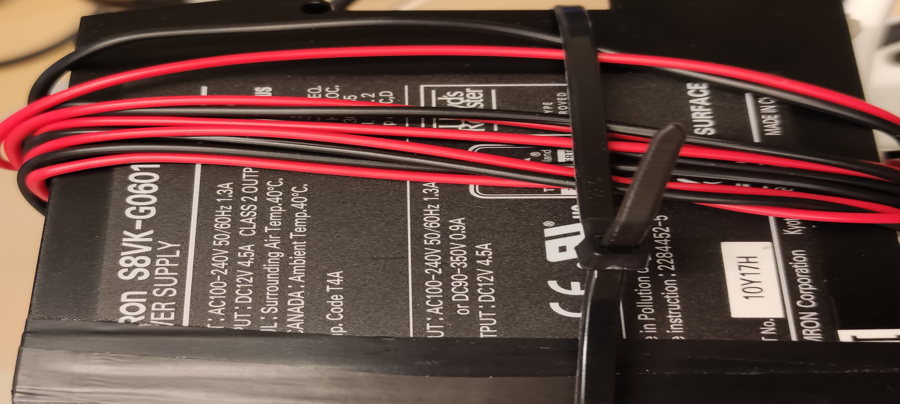

Caution¶
You cannot turn off the go-kart when the wheel is active. Make sure to stop it either using the RC controller or the command below:
rostopic pub Speed_Request_Speed std_msgs/Float32 0
Turning on the GoKart¶
Find all hosts in the network with open ssh port:
nmap -Pn -p22 192.168.150.1/24 -oG - | grep "/open" | awk '{ print $2 }'
ssh fingerprint:
ssh -X gokart1@dobby.local
ECDSA key fingerprint is SHA256:GkO/qyuwj+tCfwaZArQbMS8XsPUA4gfbMJdeTnqG1n4.
Wifi interface¶
By default, the jetson board is configured to first connect to TP-LINK_POCKET_3020_BCA5FA and then Infolab2 wifi network.
The credential for the network is available on the device (default password) and in
/protectedDocuments/Credential.txt (Protected document)
an IP in the range of 192.168.150.X is usually assigned to the client in Infolab2 wifi network.
an IP in the range of 192.168.0.X is usually assigned to the client (192.168.0.00 for the laptop) in TP-LINK_POCKET_3020_BCA5FA wifi network.
p
nmcli c s Infolab2
ifconfig
wlan0: flags=4163<UP,BROADCAST,RUNNING,MULTICAST> mtu 1500
inet 192.168.150.120 netmask 255.255.255.0 broadcast 192.168.150.255
inet6 fe80::5b07:dc97:a15c:2dd2 prefixlen 64 scopeid 0x20<link>
ether 00:04:4b:f8:0e:d9 txqueuelen 1000 (Ethernet)
RX packets 2545 bytes 526525 (526.5 KB)
RX errors 0 dropped 0 overruns 0 frame 0
TX packets 2416 bytes 536254 (536.2 KB)
TX errors 0 dropped 0 overruns 0 carrier 0 collisions 0
TP-LINK_POCKET_3020_BCA5FA
wlan0: flags=4163<UP,BROADCAST,RUNNING,MULTICAST> mtu 1500
inet 192.168.0.200 netmask 255.255.255.0 broadcast 192.168.0.255
inet6 fe80::9d56:f87a:2b29:8d97 prefixlen 64 scopeid 0x20<link>
ether 00:04:4b:f8:0e:d9 txqueuelen 1000 (Ethernet)
RX packets 9008 bytes 646052 (646.0 KB)
RX errors 0 dropped 0 overruns 0 frame 0
TX packets 9117 bytes 741776 (741.7 KB)
TX errors 0 dropped 0 overruns 0 carrier 0 collisions 0
Access to the camera remotely¶
After updating the configuration file rtsp-simple-server.yml as below
paths:
cam:
runOnInit: ffmpeg -f v4l2 -i /dev/video1 -preset ultrafast -b:v 600k -f rtsp rtsp://localhost:$RTSP_PORT/$RTSP_PATH
runOnInitRestart: yes
Execute rtsp-simple-server_v0.19.1_linux_arm64v8/ server:
./rtsp-simple-server
vlc -vvv --network-caching 200 rtsp://192.168.150.120:8554/cam
Power supply¶
Inside the lab, for safety reasons related to charging batteries, it is recommended to power the system by plugging the appliance into an outlet. S8VK-G06012 power supply with XT60 connector provides DC 12V 4.5A to power both VCU and the steering motor. GST90A19-NVDA provides 19V 4.7A to power Nvidia Jetson board.


Power usage measurements: 2.2 amps on peak (Jetson and motors working at the same time) 12 V
Battery¶
For on-road test, Biltema MC-batteri SMF, 12 V, 14 Ah, 135 x 90 x 166 mm (Artnr. 80-271) with XT60 connector can be used. (XT90 connector can be connected if powering body electronics is also necessary)
- Charge the battery under during working hours and under supervision.
- The battery probably works with no issue for few hours and it has to be rechanrged if the voltage is dropped below 10.
Remote control¶
The right panel can be used to move forward and make quick brakes. To reverse, double back (brake) and reverses the gear. (it is noticeable from the beeping sound)
On-road test checklist¶
- Laptop Charger (Dell, USB-C)
- Power supplies (2)
- Access point and its power supply
- mouse, keyboard (dongle), monitor
- ST-LINK/V2 and extra STM32F103C8T6
- Remote control
- Battery and charger
The wheel should moves back-and-forth 3 times
- When the VCU boots (issue? make sure that VCU is powered directly and not via ST-LINK/V2)
- When Jetson bootsup
- When Openpilot starts (issue? make sure both the openpilot system and jetson are connected to the right access-point)